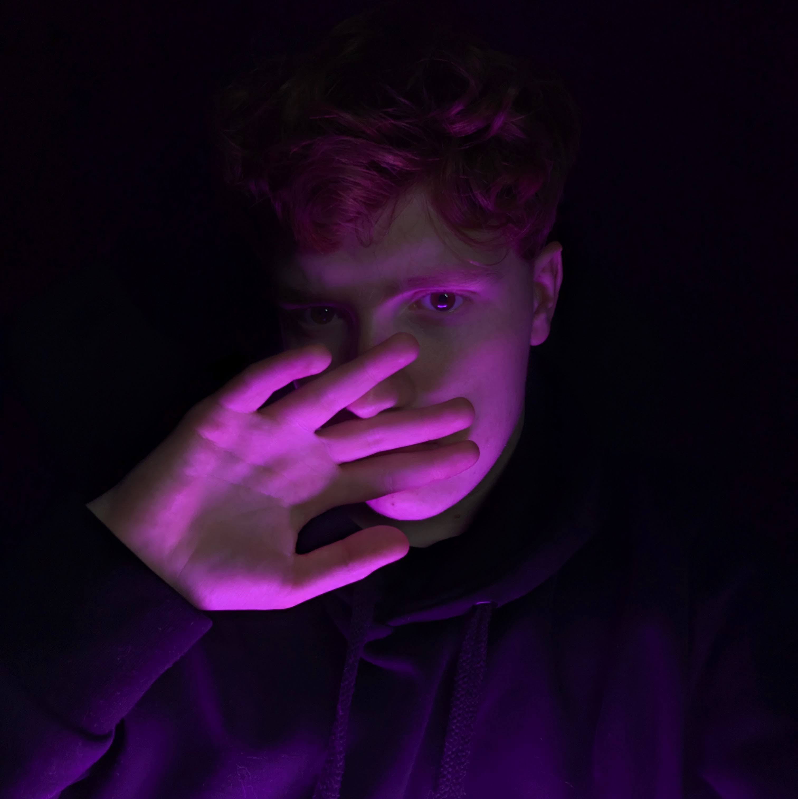

Lanixiak
O mnie
Cześć, tu Lil Lanixiak. Muzykę tworzę od 2021 roku, choć na poważnie wskoczyłem w to nieco później, kiedy zrozumiałem, że mikrofon i bit to coś więcej niż zabawa po godzinach.
Mam na koncie kilka wydanych kawałków i cały czas dopisuję kolejne, bo teksty same się nie napiszą – zwłaszcza te, które najczęściej powstają późno w nocy, kiedy reszta świata śpi, a w głowie zostaje tylko flow i pierwsza lepsza rymowanka.
Na co dzień żyję trochę podwójnym życiem – z jednej strony informatyk, który ogarnia komputery, systemy i technologię (Linux, Windows, cała ta magia pod maską), z drugiej – artysta, który w wolnej chwili łapie za aparat, bo fotografia to moja druga, cichsza pasja. Lubię łapać kadry tak samo, jak łapię rymy – czasem coś wpada przypadkiem, a czasem trzeba nad tym posiedzieć w nocy.
Pierwsze koncerty jeszcze przede mną, ale to dopiero się zaczyna – im dalej w las, tym więcej bitów, tekstów i klimatu. Zostań, będzie się działo.